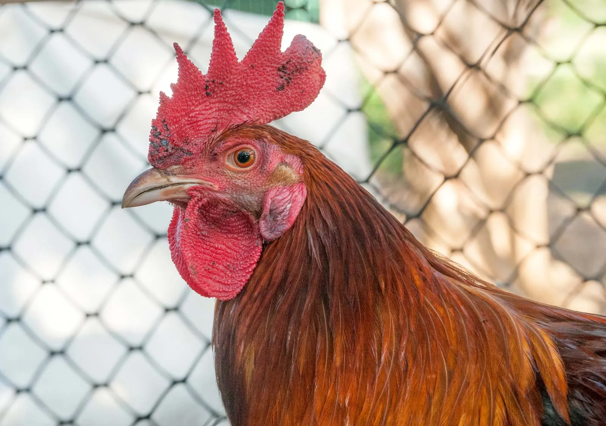

Chris' World Famous Chicken Salad

What is Chris' World Famous Chicken Salad?
Chris' World Famous Chicken Salad is famous all around the world.
Its so famous, that Mr. Worldwide himself told me, Chris, that he was
absolutely in love with this recipe. It is well known that this recipe caused
the collapse of the Roman Empire is still well loved in Myanmar, so as my
gift to the world, I have decided to share such a wonderful recipe.
Ingredients
- Love
- Passion
- Passion fruit
- Raisins
- Dried cranberries
- Craisins
- Miracle Whip
- Even more love
- The tip of the beak of a chicken
- Italian Dressing
- Italians
- A Megaphone
- Mayo
Steps
- Bake the chicken beak in a 400 degree oven.
- Add the love and be sure not to burn it as it will become carcinogenic.
- Cranberry (verb) the hell out of it.
- Update your LinkedIn.
- See how successful your friends have become in the same timespan as you.
- Cry. Just let it all out. Father would never let you do this.
- By the time the tears stop flowing, add the miracle whip (be sure not to burn it as it will become carcinogenic).
- The Italian can be a shoulder to cry on, but he/she/they will not like it.
- Throw the rest of the ingredients out.
- Enjoy!